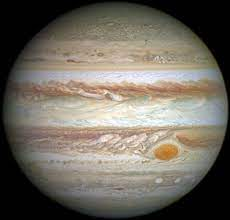
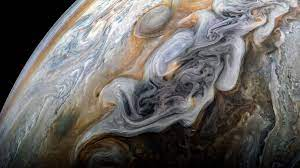

Jowisz – piąta w kolejności od Słońca i największa planeta Układu Słonecznego. Masa Jowisza jest nieco mniejsza niż jedna tysięczna masy Słońca, a zarazem dwa i pół razy większa niż łączna masa pozostałych planet w Układzie Słonecznym. Wraz z Saturnem, Uranem i Neptunem tworzą grupę gazowych olbrzymów, nazywaną czasem również planetami jowiszowymi. Planetę znali astronomowie w czasach starożytnych, była związana z mitologią i wierzeniami religijnymi wielu kultur. Rzymianie nazwali planetę na cześć najważniejszego bóstwa swojej mitologii – Jowisza. Obserwowany z Ziemi Jowisz może osiągnąć jasność do −2,95m. Jest to trzeci co do jasności naturalny obiekt na nocnym niebie po Księżycu i Wenus (okresowo, w momencie wielkiej opozycji, jasnością może mu dorównywać Mars).